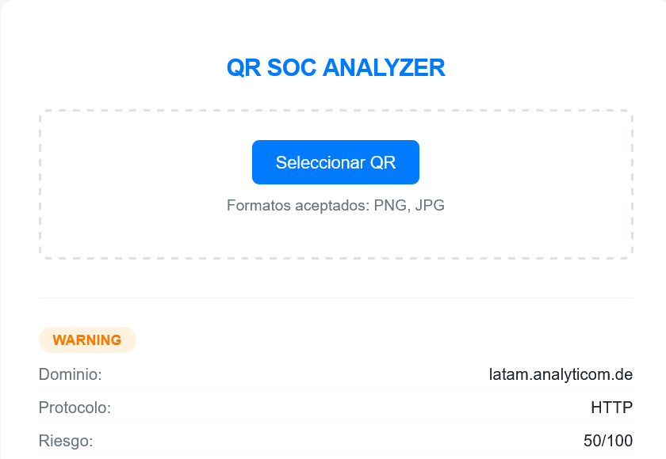
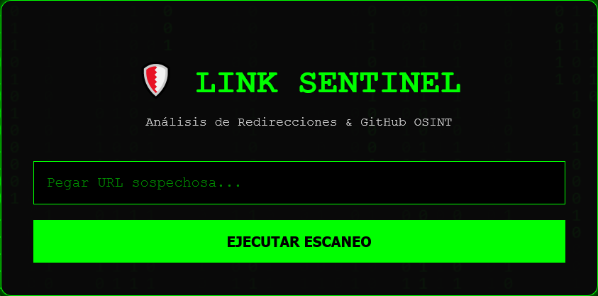

Security • Blue Team • SOC • Python

Decodifica códigos QR y verifica la reputación de las URLs contenidas con la API de VirusTotal, para prevenir ataques de QRishing.

Analiza URLs con heurísticas locales (SSL, estructura sospechosa) y las cruza contra +70 motores antivirus de VirusTotal para detectar phishing.